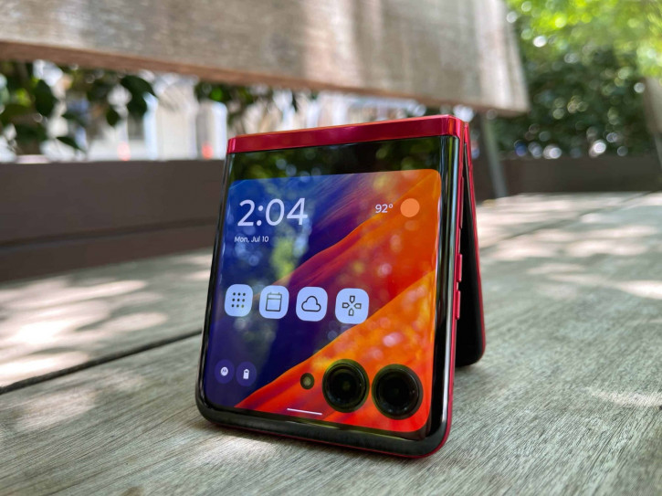

ГЛАВНАЯ
Одной из главных интриг касательно Xiaomi Mix Flip, который станет первой Flip-раскладушкой бренда, является дизайн. Приоткрыть завесу тайны и развеять ложные слухи сегодня решился инсайдер Digital Chat Station. Он заявил, что внешний вспомогательный экран прототипов занимает почти всю площадь верхней половины, что говорит о наличии в OLED-панели пары отверстий под основные камеры. Другими словами, визуально Xiaomi Mix Flip будет перекликаться с Motorola Razr 40 Ultra, в котором экран реализован аналогичным образом. Xiaomi Mix Flip будет напоминать Motorola Razr 40 Ultra: новые секреты Motorola Razr 40 Ultra Также источник отметил, что аппарат тестируется с рекордно ёмкой для Flip-формата батареей на 5800-5900 мАч, заряжать которую можно будет сугубо по проводу: катушкой беспроводной зарядки пожертвовали в угоду малой толщины и веса. Ориентировочно, запуск Xiaomi Mix Flip следует ждать летом. 